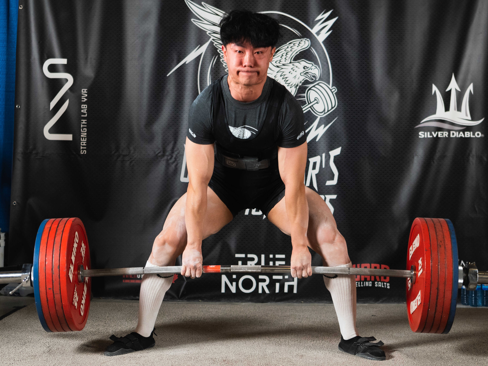

I'm an aspiring computer scientist from Calgary, Alberta.
Currently I'm a undergraduate student at the University of British Columbia, pursuing a combined degree in Computer Science and Statistics. Recently I've been very interested in probability and statistics, especially stochastic processes and inference theory (MATH 419 and STAT 461 if you go to UBC).
I've interned as a software engineer at AWS (twice), Tesla, and VIPRE Security. You can find out more about my experiences on my resume down below.
I have aspirations to contribute to research in statistics/ML theory. Might go to grad school, we'll see.
Outside of work and school, I enjoy lifting weights. I'm currently training for 2024 Canadian Powerlifting Nationals. Check out some of my lifts below!